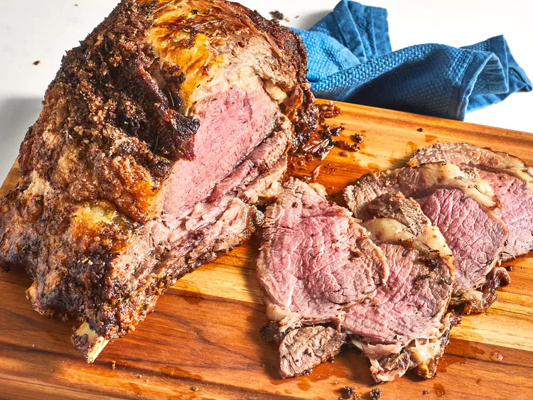
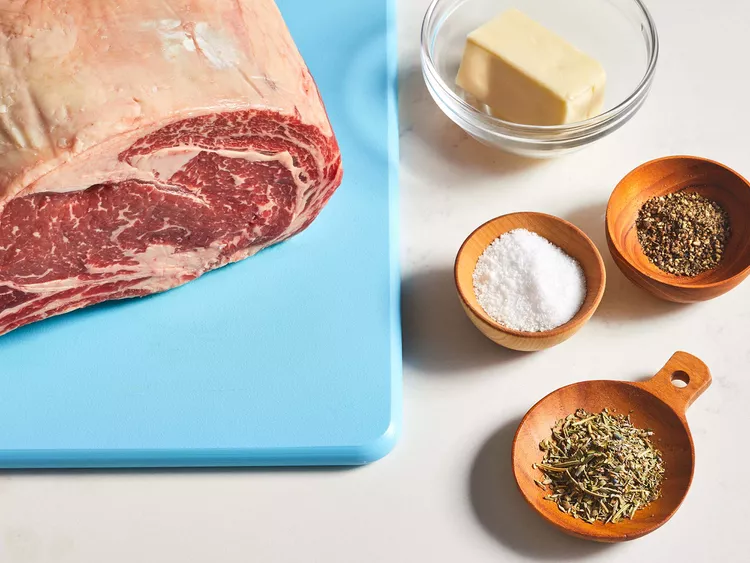
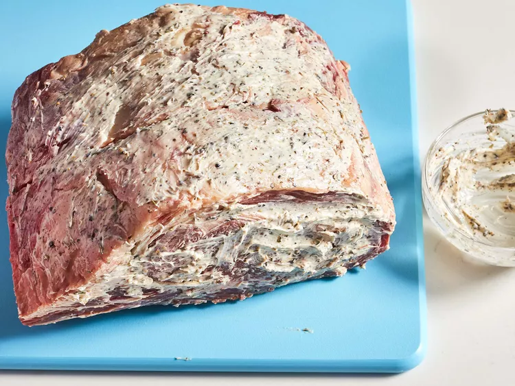

Chef John's Perfect Prime Rib

Description
This simple, foolproof "mathematical method" for making the very best prime rib will greatly increase your chances of success. Here is the formula: Multiply the exact weight times 5 minutes. For me it was 5.35 x 5 = 26.75 minutes, which we round up to 27.
You'll cook your room-temperature prime rib at 500 degrees F for exactly that many minutes. (Twenty-seven minutes, in my case.) Then turn off the oven and wait 2 hours without opening the door. When the time's up, remove the prime rib and slice into the most perfectly medium-rare meat you've ever seen. See? That's all it takes to make foolproof prime rib cooked to a perfect pink that's somewhere just a shade under medium rare. Just make sure you're starting with a prime rib that has been brought to room temperature! This is critical in order for the math to work!
Ingredients
- 1 (4 pound) prime rib roast
- ¼ cup unsalted butter, softened
- 1 tablespoon freshly ground black pepper
- 1 teaspoon herbes de Provence
- kosher salt to taste
Steps
- Place prime rib roast on a plate and bring to room temperature, 2 to 4 hours.

- Preheat the oven to 500 degrees F (260 degrees C).
- Combine butter, pepper, and herbes de Provence in a bowl; mix until well blended. Spread butter mixture evenly over entire roast. Season roast generously with kosher salt.

- Roast the 4-pound roast in the preheated oven for 20 minutes. (If your roast is larger or smaller than 4 pounds, multiply the exact weight times 5 minutes.)
- Turn the oven off and, leaving the roast in the oven with the door closed, let the roast sit in the oven for 2 hours.
- Remove roast from the oven, slice, and serve.